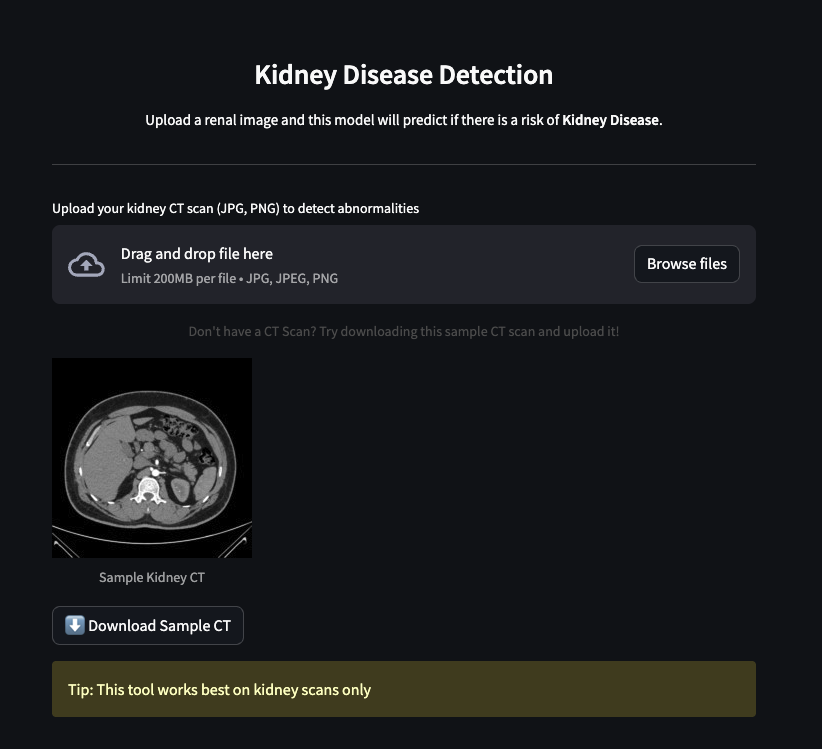
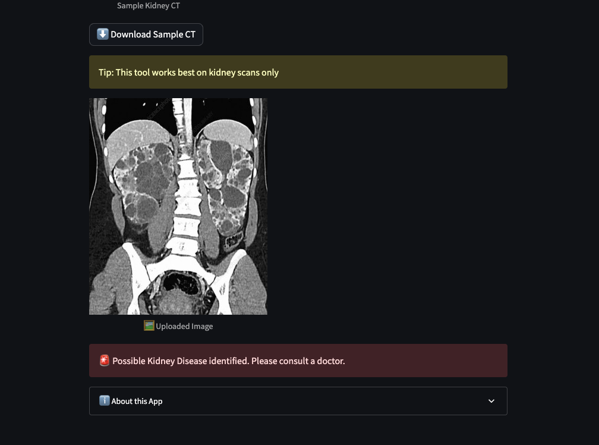

← Back to Portfolio
Kidney Disease Detection using CT Scans
Deep learning application for detecting kidney disease abnormalities from CT scan images
Overview
A Streamlit web application that leverages deep learning to detect signs of kidney disease from CT scan images.
Built with TensorFlow and VGG16 transfer learning, this tool serves as a supportive AI assistant for medical
professionals. The application is containerized with Docker and deployed on Render with a CI/CD pipeline using GitHub Actions.
Demo


Screenshots showing the app interface, upload process, and detection results
Key Features
Simple Image Upload
Upload kidney CT scan images in JPG or PNG format for instant analysis
VGG16 Transfer Learning
Leverages pretrained VGG16 model fine-tuned for kidney disease detection
Docker Containerization
Fully containerized application for consistent deployment across environments
CI/CD Pipeline
Automated build and deployment using GitHub Actions and Docker Hub
How It Works
-
1
Upload CT Scan
User uploads a kidney CT scan image through the Streamlit interface
-
2
Image Preprocessing
Image is resized to 224x224x3 and normalized for model input
-
3
VGG16 Inference
Fine-tuned VGG16 model analyzes the scan for disease indicators
-
4
Binary Classification
Model outputs prediction: No Kidney Disease or Likely Kidney Disease
-
5
Display Results
Results are displayed with clear visual indicators for medical review
Technical Architecture
Model Details
- Base Model: VGG16 pretrained on ImageNet
- Training: Fine-tuned using transfer learning on kidney CT scans
- Framework: TensorFlow 2.19.0
- Input Shape: 224x224x3 RGB images
- Output: Binary classification (0: No disease, 1: Disease)
Deployment Pipeline
- Containerization: Docker with Python 3.12.7 base image
- Container Registry: Docker Hub for image storage
- Hosting: Render web service
- CI/CD: GitHub Actions for automated build and push
- Port: Application runs on port 8080
Technologies Used
Python
TensorFlow
VGG16
Streamlit
Docker
GitHub Actions
Render
Docker Hub
Deployment Workflow
- Build Docker Image:
docker build -t pavi2803/kidney-disease-app:latest .
- Push to Docker Hub:
docker push pavi2803/kidney-disease-app:latest
- Deploy on Render:
Connect to Docker Hub image with port 8080 configuration
- Automated CI/CD:
GitHub Actions automatically builds and pushes new images on every push to main branch
Impact & Results
- Achieved 95% accuracy using VGG16 transfer learning on kidney CT scan dataset
- Binary classification model for kidney disease detection from CT scans
- Deployed as accessible web application for medical professionals
- Fully automated CI/CD pipeline reduces deployment time from hours to minutes
- Docker containerization ensures consistent performance across environments
- Serves as a supportive AI tool to assist in medical decision-making